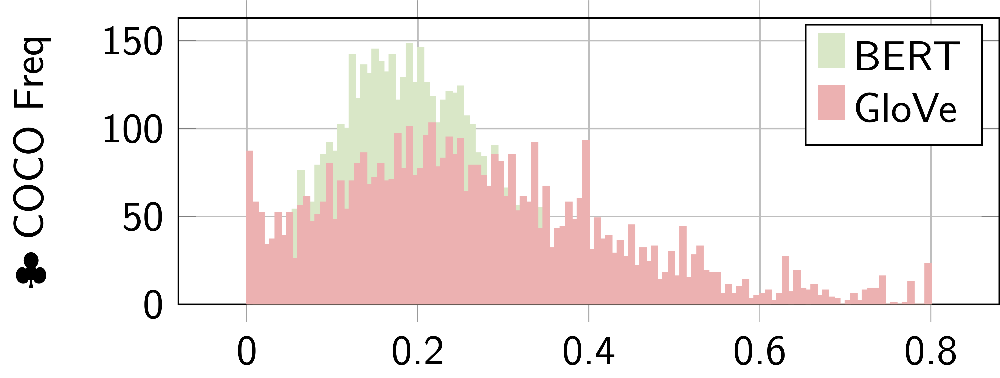

Word to Sentence Visual Semantic Similarity for Caption Generation: Lessons Learned |
| Ahmed Sabir |
| Universitat Politècnica de Catalunya TALP Research Center |

|
|
|
|
Word to Sentence Visual Semantic Similarity for Caption Generation: Lessons Learned |
| Ahmed Sabir |
| Universitat Politècnica de Catalunya TALP Research Center |
|
|
|
|
This paper focuses on enhancing the captions generated by image captioning systems. We propose an approach for improving caption generation systems by choosing the most closely related output to the image rather than the most likely output produced by the model. Our model revises the language generation output beam search from a visual context perspective. We employ a visual semantic measure in a word and sentence level manner to match the proper caption to the related information in the image. This approach can be applied to any caption system as a post-processing method.
To enable word-level semantics with GloVe, we extract keyphrases [24] from the caption, and we employ the confidence of the classifier in the image to convert the similarity into a probability [30].

We fine-tuned BERT on the Caption datasets (Flickr8k [13] for less data senario, and COCO [18] for regular model e.g. Trasnformer [8]) incorporating the top-k 3 visual context information extracted from each image [11], where the target is the semantic relatedness between the visual and the candidates caption.

Inspired by Products of Experts [12], we merged the two experts through a Late Fusion layer. As this work aims to retrieve the closest candidate caption (with its visual context) with the highest probability, the normalization step is unnecessary.

We evaluate the proposed approach on two different size datasets. The idea is to evaluate our approach with (1) a shallow model CNN-LSTM [32] (i.e. less data scenario), and on a system that is trained on a huge amount of data (VilBERT [21] and Transformer[8]). Our re-ranker yielded mixed result (+) improving model accuracy, (−) struggles when dealing with less diverse captions i.e. Transformer baseline

We performed an ablation study with our worst model (i.e. Transformer baseline) to investigate the effectiveness of each expert. In this experiment, we trained each model separately. The GloVe as a stand-alone performed better than the combined model (and thus, the combined model breaks the accuracy). To investigate this even further we visualized each expert before the fusion layers as shown in the Figure below. The color represents in the Figure below ♣ and shown in the Table that BERT is not contributing, as GloVe, to the final score. The GloVe is dominating to become the expert to the final score for two reasons: (1) short caption, and (2) less diverse beam.

| Model | B-4 | M | R | C | B-S |
| Transformer-BeamS [8] | 0.374 | 0.278 | 0.569 | 1.153 | 0.9399 |
| +VR-RoBERT-GloVe | 0.370 | 0.277 | 0.567 | 1.145 | 0.9395 |
| +VR-BERT-GloVe | 0.370 | 0.371 | 0.278 | 1.149 | 0.9398 |
| +VR-RoBERT-BERT | 0.369 | 0.278 | 0.567 | 1.144 | 0.9395 |
| +VR_V1-GloVe | 0.371 | 0.278 | 0.568 | 1.148 | 0.9398 |
| +VR_V2-GloVe | 0.371 | 0.371 | 0.278 | 1.149 | 0.9398 |
| The color represents the actual value BERT and GloVe on 5k ♣ COCO dataset Karpathy test set as shown in the Figure above | |||||
@article{sabir2023,
title={Word to Sentence Visual Semantic Similarity for Caption Generation: Lessons Learned},
author={Sabir, Ahmed},
journal={arXiv preprint arXiv},
year={2023}
}
Contact: Ahmed Sabir